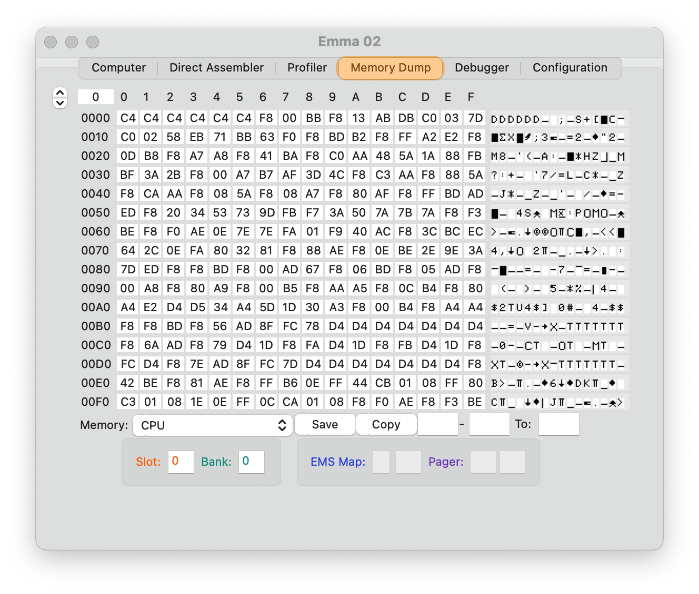
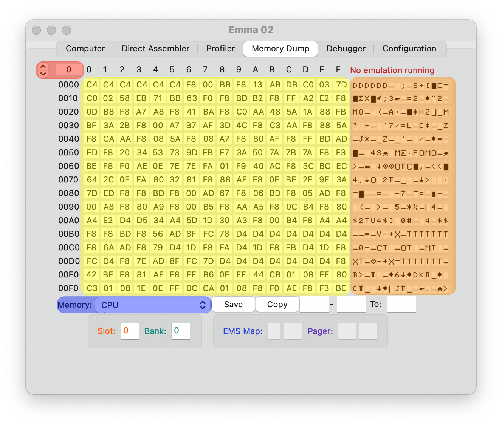

The Memory Dump tool shows 256 bytes of memory on the GUI both in hexadecimal format and as ASCII characters. Multiple memory options are available including CPU memory, video memory, memory type and profiler information.
To reach the Memory Dump tab, select the 'Memory Dump' (highlighted in orange) tab.

The default view will show the first 256 bytes of main CPU memory (highlighted in yellow below showing content in bytes and highlighted in orange showing ASCII) from the emulated computer. To show another part of memory type in any address value in the top left address field or use the spin buttons to step through memory (highlighted in red).

Note that the text in red 'No emulation running' indicates that no emulator was started and as such the data shown is not active and changing address value will not have any effect.
To change any address value (highlighted in yellow) select the value and just change it. Note both ROM and RAM values can be changed!
When running an emulation using the RCA CDP1870 the actual 'shaped' video characters will be shown, other video emulation will show ASCII (highlighted in orange)
Next to the main CPU memory other memory dump options are available by changing the 'Memory' choice button (highlighted in blue). Memory dump options:
In all modes except 'Type' and 'Profiler', memory values are shown and can be changed per memory page of 256 bytes, in 'Type' mode memory types (ROM, RAM, Video RAM etc) is shown and can be changed.
The following additional features are available on windows and OS X, currently not implemented in the Linux version: After editing one byte the next address will be selected automatically. After the last byte of the page is changed the next page will be shown.
Note 1: when using the any of the video modes above only the used address will be shown, the number of addresses depends on the emulated computer and video settings.
Note 2: None of the settings in the Memory Dump tab are saved in the Emma 02 configuration, so at every start of the Emma 02 emulator these settings are set to default.
Additional Information can be found in the following sub-sections: